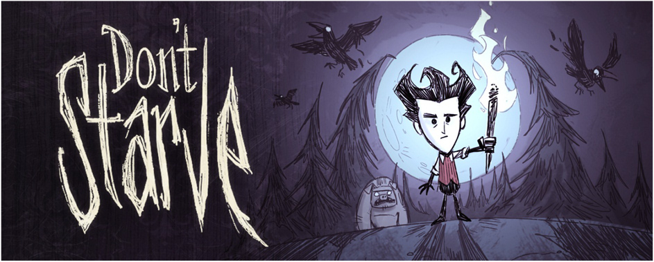
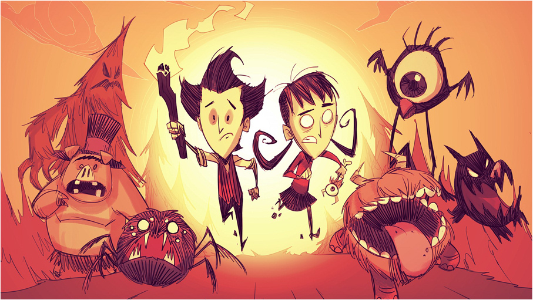
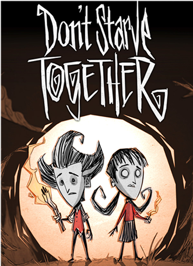
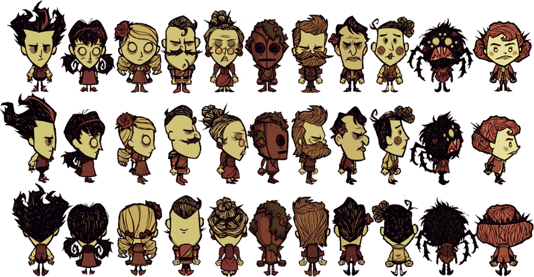

Don’t Starve — компьютерная игра в жанре action-adventure с элементами roguelike и выживания, разработанная и изданная канадской независимой командой разработчиков Klei Entertainment. Выпуск игры состоялся 23 апреля 2013 года на платформе для цифровой дистрибуции Steam.

Игра имеет два режима игры: выживание и приключение, однако прямой доступ к игре имеет только режим выживания. Выбрав персонажа, который имеет свои уникальные способности, а также настроив мир, игрок может начать выживать. Персонаж появляется в неопределённом месте, где его встречает Максвелл, который советует поискать дрова для огня.
Сама цель игры — продержаться в случайно собранном мире как можно дольше. При этом у игрока есть две концовки: смерть и спасение Максвелла. Первая наступает, когда у игрока количество очков жизни становится равным нулю. Для второй требуется пять частей портала, который введет в другой мир, объявляя конец предыдущему, но если вы не выживите там, вы вернётесь в обычный мир, на том же месте, с теми же вещами и в тот же день. Следствием долгого выживания является разблокировка персонажей, для которой требуется очки опыта. Чем больше прожито дней, тем больше очков. Есть исключения, но о них позже.
Каждый день делится на три промежутка: день, вечер и ночь (некоторых промежутков может и не быть в зависимости от настроек мира). Днем игрок может вести обычный образ жизни: собирать предметы, взаимодействовать с другими существами, есть, исследовать и т. д. Вечер является предупреждением перед ночью: игрок также может вести дела, однако ему нужно задуматься и приготовить все для того, чтобы пережить ночь. В отличие от дня только в слабом освещении и снижении рассудка персонажа. Когда наступает сама ночь, то игрок не может ничего увидеть. Более того, персонаж быстрее сходит с ума, а также бездействовать ему не даст ночной монстр по имени Чарли (ранее Гру). Долгое время о Чарли почти ничего не было известно. Она была ассистенткой Максвелла, когда он работал фокусником до начала основного сюжета игры. Пол и человеческая природа Чарли впервые были раскрыты Кевином (ведущим разработчиком Klei) на одной из прямых трансляций. Этот монстр может за пару ударов расправиться с персонажем, что ведет к неминуемой смерти. Чтобы избежать этого, нужен источник освещения; часто таким является огонь. Чарли боится света, что на руку игроку. Однако ему нужно следить, чтобы источник света не погас.
У персонажа есть три основных параметра: здоровье, сытость и рассудок. Первый — самый главный. Игрок должен следить за наличием очков здоровья, иначе персонаж умрет. Здоровье понижается, когда персонажа кто-нибудь ударит, при обморожении и перегреве. Значение сытости показывает насколько сыт персонаж. Его можно пополнить путём потребления пищи. Обнуление сытости не ведет к мгновенной смерти, однако постепенно снижает здоровье. Рассудок никак не связан со здоровьем, однако если он низок, то появятся кошмары, которые могут нанести действительный урон персонажу. Рассудок понижается при темных временах суток (при любых обстоятельствах), когда персонаж находится рядом с монстрами, а также при употреблении несвежей или сырой еды. Понижение рассудка спровоцирует появление зрительных и звуковых факторов, которые не являются реальными. Рассудок можно повысить сбором цветов, сном, готовкой зеленых грибов или готовя специальные блюда, повышающие рассудок (ириски, вареники). Игрок должен активно действовать, чтобы не умереть: строить, добывать пищу, заводить друзей и уничтожать врагов, изучать новое с помощью науки и другое.
В режим «Приключение» можно попасть только через «Дверь Максвелла» (не портал), который ведёт в миры жестоких испытаний. В отличие от портала, игрок не может вынести вещи из мира выживания в приключение. Приключение делится на шесть глав. Однако их порядок хаотичен за исключением последних двух. В первых пяти главах целью является нахождение пяти частей портала Максвелла, которые можно найти с помощью специального устройства, которое нужно поставить в специальное гнездо рядом с порталом после сборки последнего. Также нужно подметить что миры генерируются случайно.

Идея создания игры появилась в рождественские выходные, когда один из разработчиков собрал прототип игры, в которой главный герой находился на острове, и на нём периодически наступала ночь. В распоряжении героя был костёр и топор, а с помощью последнего можно было охотиться на живущих на острове свиней и добывать мясо. В то же время, ночью главный герой мог находиться только у костра и в это время приходилось отбиваться от свиней. Игровой процесс был построен таким образом, что мяса не хватало, и постепенно у героя уменьшался уровень сытости и это приводило к смерти. Задачей же было выжить как можно дольше, и на этом этапе появилось выражение «don’t starve».
Первый собранный прототип был отложен, и был в таком состоянии более года. В студии было принято решение возобновить работы, но при этом вести их в ключе независимой разработки от издателя. Для этого была выбрана модель free-to-play и стратегия как в Minecraft, когда была создана небольшая игра с минимумом контента, и далее разработчики смотрели, если она оказывается интересной пользователям, то идёт развитие дальше, а если нет, то она остается бесплатной. Для реализации модели предпринимались шаги по популяризации игры. Данная стратегия сработала, и студия начала развивать игру — на различных платформах и наполнять контентом, чтобы «было что в ней купить». Таким образом проект развивался, и повышалась цена за продаваемую игру. Во время продаж разработчики продолжили стратегию популяризации, частью которой являлась обязательная продажа одной дополнительной бесплатной копии с каждым приобретением игры. То есть, каждый покупатель получал себе игру и возможность подарить её другому игроку.
Философией проектирования игры Don’t Starve стало создание приятного игрового опыта, и при этом игроку давались минимальные инструкции для выживания. Предполагалось, что все дальнейшие действия — изучение мира и выживание — он должен делать сам. При этом, так как основной целью является сама игра, а не достижения, то смерть персонажа не должна отталкивать игроков. Создание контента было ориентировано на 20–30 дней внутриигрового выживания в игре (несколько часов реального времени), и разработчики после выпуска удивились, что многие игроки преодолевали этот рубеж и жили в Don’t Starve сотни дней. После анализа разработчики добавили в игру врата Дверь Максвелла, найдя которые игрок мог пройти пять чрезвычайно сложных уровней, и их прохождение давало победу.

Don’t Starve Together — многопользовательская версия Don’t Starve выпущенная как самостоятельная игра 21 апреля 2016 года.
Don’t Starve Together представляет собой оригинальную игру с контентом из DLC «Reign Of Giants» и рядом нововведений специально для многопользовательской игры.
В отличие от Don’t Starve, после смерти игроки превращаются в призраков. В состоянии призрака у персонажа отсутствует инвентарь и возможность подбирать и переносить предметы, он не может наносить урон и напрямую взаимодействовать с миром, но вместо этого призрак может «потревожить» существо или объект игрового мира. Потревожив любой объект, есть шанс наделить его каким-нибудь свойством, например, дерево может загореться или стать энтом, а свин превратиться в оборотня.
Присутствуют 3 режима игры: Survival, Endless и Wilderness. В режиме survival игроки могут воскрешать друг друга, однако, когда все игроки станут призраками, запустится таймер, отсчитывающий время до пересоздания мира, также каждый призрак негативно влияет на рассудок других игроков. В режиме endless игроки могут воскрешаться у входа в мир. Мир, при смерти всех игроков, не будет пересоздаваться. В отличие от других режимов, в wilderness все игроки появляются в случайных точках карты, и при смерти игрок не становится призраком, а начинает игру заново. Каждый из режимов может играться как кооперативно, так и с возможностью PvP между игроками.

Визуальный стиль Don't Starve отдаленно напоминает мультфильмы Тима Бёртона своими прерывистыми и «живыми» линиями и словно пустыми глазами персонажей. Рисовка определенно соответсвует концепции игры и дополняет ее.